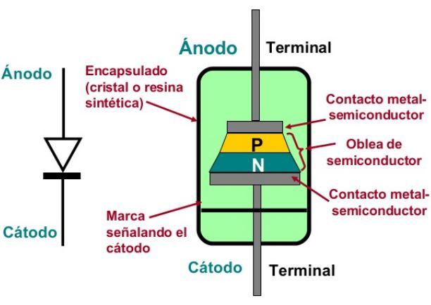
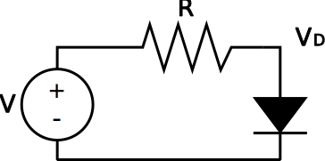
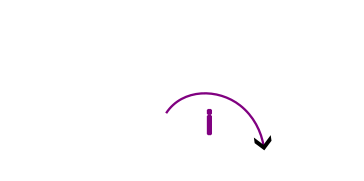

TEL131 Electrónica Digital
Circuitos No-lineales
Marie González-Inostroza
Semiconductores
Elementos que pueden comportarse como conductores o como aislantes según ciertas condiciones.
Unión PN
Diodo
Semiconductor que permite el paso de la corriente en una dirección.
Diodo
Diodo

Unión PN
Zonas de polarización del diodo

Ecuación del diodo
$I_D=I_S(e^{\frac{V_D}{V_{TH}}}-1)$
Métodos de análisis de circuitos no lineales
Métodos de análisis de circuitos no lineales:
Solución analítica
Análisis directamente alegraico utilizando las ecuaciones de los componentes.
Ejemplo de Solución analítica


Ejemplo de Solución analítica
Para el diodo tenemos:
$I_D=I_S(e^{\frac{V_D}{V_{TH}}}-1)$
Para la resistencia:
$I_R=\frac{V-V_D}{R}$
Para el diodo tenemos: $I_D=I_S(e^{\frac{V_D}{V_{TH}}}-1)$ Para la resistencia: $I_R=\frac{V-V_D}{R}$
Ejemplo de Solución analítica
Uniendo ambas ecuaciones, obtenemos:
$I_S(e^{\frac{V_D}{V_{TH}}}-1)=\frac{V-V_D}{R}$
Uniendo ambas ecuaciones, obtenemos: $I_S(e^{\frac{V_D}{V_{TH}}}-1)=\frac{V-V_D}{R}$
Métodos de análisis de circuitos no lineales:
Solución gráfica
Análisis mediante gráficos de las ecuaciones de los componentes.
Ejemplo de Solución gráfica
$I_D=I_S(e^{\frac{V_D}{V_{TH}}}-1)$
$I_R=\frac{V-V_D}{R}$
$I_D=I_S(e^{\frac{V_D}{V_{TH}}}-1)$ $I_R=\frac{V-V_D}{R}$
Métodos de análisis de circuitos no lineales:
Solución por partes
Análisis mediante circuitos equivalentes para distintas opciones.
Pasos Solución por partes
- Reemplazar por posibles circuitos equivalentes
- Analizar cada circuito equivalente
- Descartar contradicciones
- La respuesta correcta es el circuito que no tiene contradicciones
Ejemplo de Solución por partes
Modelo ideal
-
Diodo ON: Corto circuito
-
Diodo OFF: Circuito abierto
Modelo ideal
- Diodo ON: Corto circuito
- Diodo OFF: Circuito abierto
De forma individual, responde:
Para valores conocidos de las entradas y la resistencia ¿Cuántos circuitos equivalentes posibles hay para el siguiente circuito?

- 1
- 2
- 4
- 8
De forma individual, responde:
Si ambas entradas son de 0V y R=10K ¿Cuál es el voltaje de salida?. Considera Vth=1.1V
- 0V
- 1.1V
- 3.9V
- 5V
De forma individual, responde:
Si ambas entradas son de 5V y R=10 ¿Cuál es el voltaje de salida?. Considera Vth=1.1V
- 0.5V
- 1.1V
- 3.9V
- 5V
Transistores tipo mosfet
Proyecto
Partes del Proyecto
- Bibliografía anotada
- Revisión bibliográfica
- Reflexión
Bibliografía anotada
Selección y anotación de fuentes que puedan servir para la investigación de un tema.
Partes de la Bibliografía anotada
- Pregunta guía o tema de investigación
- Para cada fuente
- Cita extendida
- Utilidad
- Resumen
- Extractos
- Discusión y análisis
- Trabajo a futuro
- Bibliografía
Pregunta de investigación
Si el tema es "Aplicaciones de la electrónica digital en la atención médica", la pregunta podría ser: "¿Cómo la electrónica digital mejora la precisión de los dispositivos de diagnóstico médico?".
Pregunta de investigación
Debe ser
- Clara y específica
- Relevante
- Abarcable
- Relacionada con la electrónica digital
- ¿Cómo funcionan los sensores de fotografía de los teléfonos móviles de los últimos 10 años?
- ¿Cómo impacta el uso de interruptores inteligentes en el consumo energético de un hogar?
- ¿Cómo ha revolucionado la electrónica digital la atención médica y cuáles son los desafíos actuales en la implementación de dispositivos médicos digitales?
- ¿Cómo ha evolucionado la electrónica de los drones de grabación?
- ¿Cómo se puede utilizar la electrónica digital en la enseñanza y el aprendizaje de conceptos de ciencias y tecnología en entornos educativos?
- ¿Cuál es el impacto de la tecnología de nanotransistores en la reducción del consumo de energía en dispositivos electrónicos?
- Realicen una lista de al menos 5 posibles preguntas de investigación en torno a su tema
- Discutan cuál es la pregunta que les gustaría abordar durante el semestre.
- Anoten cuál fue la pregunta escogida.
- Busquen al menos 2 fuentes que podrían ayudarles a responder la pregunta.
- A partir de sus abstracts (resúmenes) identifiquen cuál podría ser la utilidad de cada una.
- Anoten la utilidad de cada fuente seleccionada.